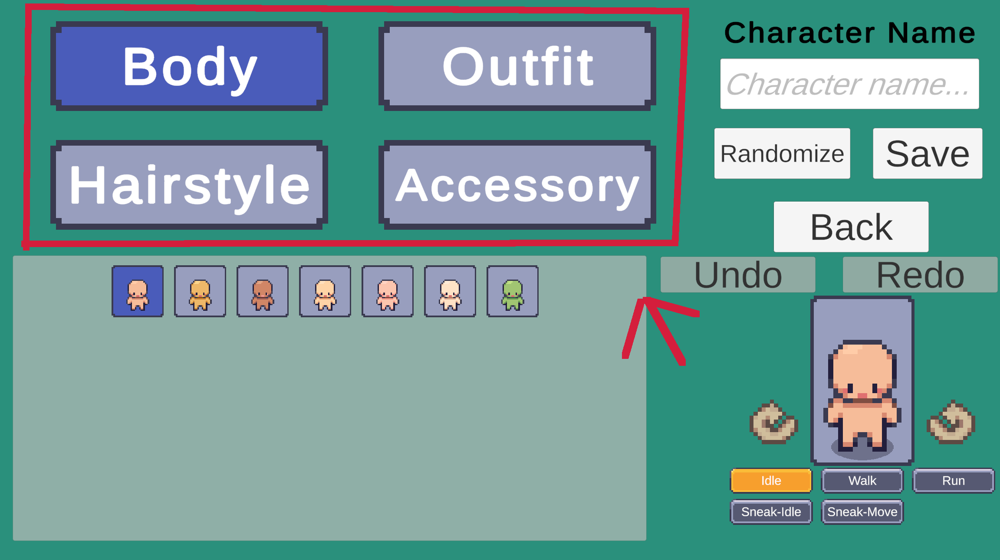

Tab Layer Selector
A Tab Layer Selector won't do much on it's own. It must be paired with another Layer Selector. When a Tab Layer Selector is pressed it will change the selected layer in the Character Layer Selection Manager which can then be used to change the assigned layer of another selector.
Note
The Tab Layer Selector was designed to work with Grid Layer Selectors & List Layer Selectors originally but can work with any Layer Selector.

Prefabs
Tip
Location: Prefabs > Character Creator > Layer Selectors > Tab Selector
Layer Selector Prefabs
- Layer Tab Selector – Basic tab selector (Just a button).
Pre-Setup Prefabs
Pre-setup prefabs already include a Character Layer Selection Manager.
These will work out of the box without any extra setup required.
- Dropdown Selectors [Initialize Existing] – Uses tab selectors already present in the prefab hierarchy.
Note
No [Auto Create] variant is available for tab layer selectors because they require a reference to the Character Layer Selection Manager which must be set manually. This means they cannot be created automatically at runtime.
Setting up the second Layer Selector
The CCMSelectedlayerTabHandler component can be used to change the assigned layer of another selector to the one selected in the Character Layer Selection Manager.
It takes two references:
- Character Layer Selection Manager - Used to detect when the selected layer has been changed.
- Layer Selector - Any type of layer selector can be used. It will automatically be updated to use the layer selected in the Character Layer Selection Manager.
Customization
- Styling The tab layer selector can be freely modified (Change background sprite, font, colors, etc).